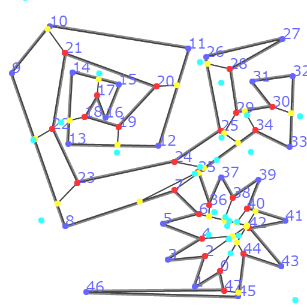
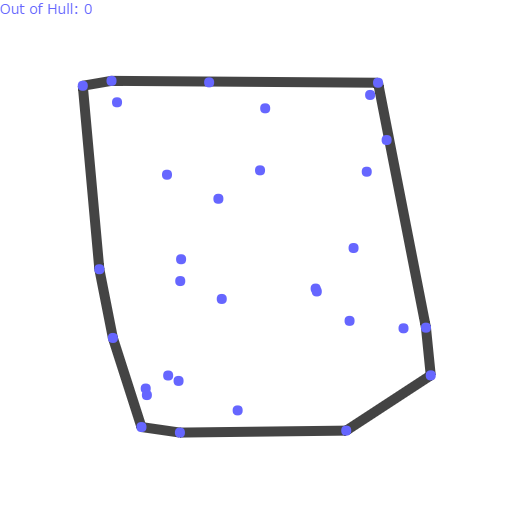
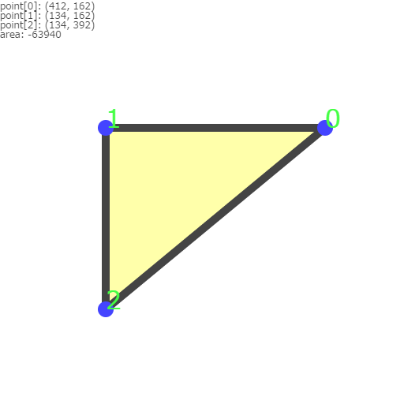
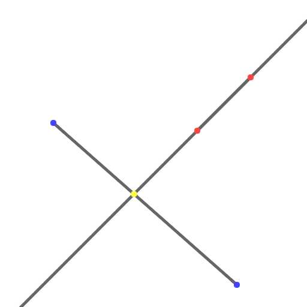

Convex Decomposition
Convex Decomposition
多角形の反射角（Reflex vertices）を二分して凸分割。
Quick Hull
凸包を求めるQuick Hullアルゴリズム。
三角形の面積
線分と直線の交差
参考文献
Overview · Poly Decomp
Intersections of a Set of Segments
Quick Hull Algorithm
5.4.2.3 ベクトルを用いた三角形の面積公式 - RAVCO
geometry - How do you detect where two line segments intersect? - Stack Overflow
Ray-Line Segment Intersection Test in 2D – Progress Quest
   